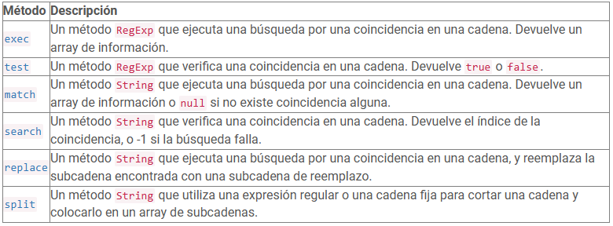
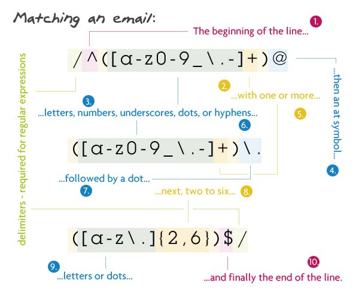
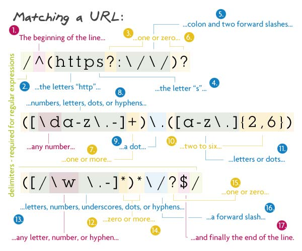
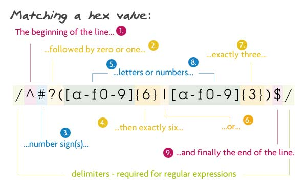

Las expresiones regulares (o regex) son patrones que se utilizan para hacer coincidir combinaciones de caracteres en cadenas de texto. En JavaScript, las expresiones regulares también son objetos. Estos patrones se utilizan con los siguientes métodos:

Las expresiones regulares se utilizan ampliamente en programación, procesamiento de texto, análisis de datos, y en muchos otros campos donde se requiera el manejo y la manipulación de cadenas de texto de forma precisa y eficiente.
Su importancia radica en su capacidad para encontrar patrones específicos dentro de grandes volúmenes de datos de manera eficiente, así como en su utilidad para validar la estructura y el formato de información de entrada.
Las expresiones regulares son vitales en el ámbito del procesamiento de texto y la manipulación de datos, destacándose por su flexibilidad y habilidad para buscar, validar y transformar cadenas de texto. Son una herramienta imprescindible para desarrolladores y profesionales de TI, ya que permiten realizar diversas tareas como validar formatos de correos electrónicos, buscar información específica en grandes conjuntos de datos y reemplazar texto basado en patrones predefinidos. En síntesis, su relevancia reside en su capacidad para abordar eficientemente problemas relacionados con el procesamiento de texto, ofreciendo soluciones precisas y eficaces.
Ejemplo: Validar una dirección de correo electrónico.

Ejemplo: Validar una URL.

Ejemplo: Validar una IP.

Ejemplo: Validar una URL.

Como estudiante de sistemas, puedo concluir que las expresiones regulares representan una herramienta esencial en el desarrollo de software y la manipulación de datos. Su versatilidad y capacidad para buscar, validar y modificar cadenas de texto son indispensables para abordar una variedad de problemas asociados con el procesamiento de texto. Al adquirir habilidades en expresiones regulares, podemos optimizar nuestras tareas de programación, mejorar la eficiencia de nuestros algoritmos y crear aplicaciones más sólidas y funcionales. Por ende, comprender y dominar el uso de expresiones regulares se vuelve crucial para cualquier estudiante de sistemas que busque destacarse en el campo de la informática y la ingeniería de software.